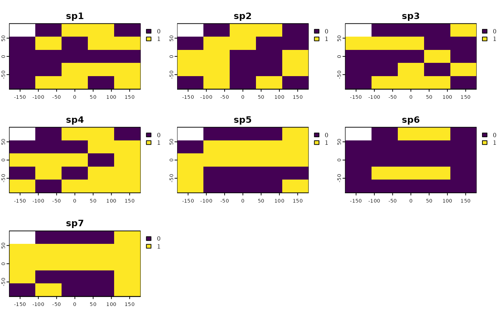
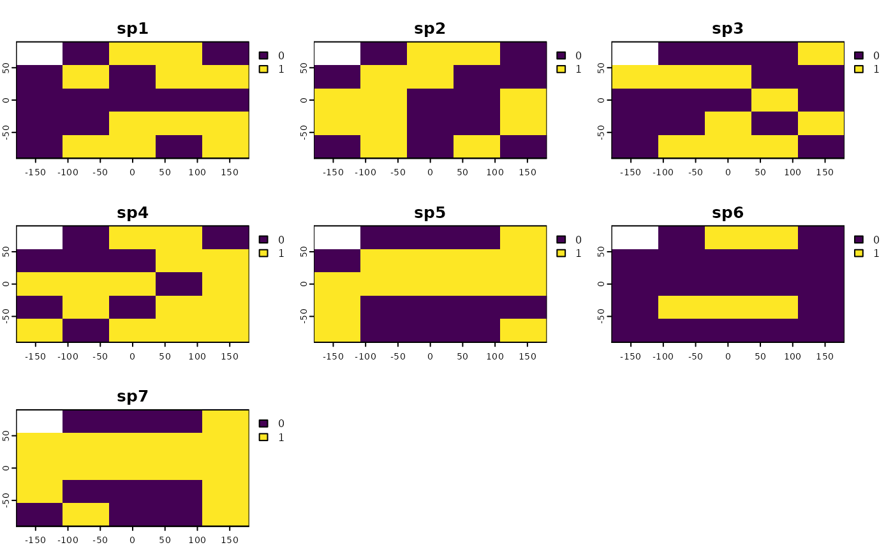
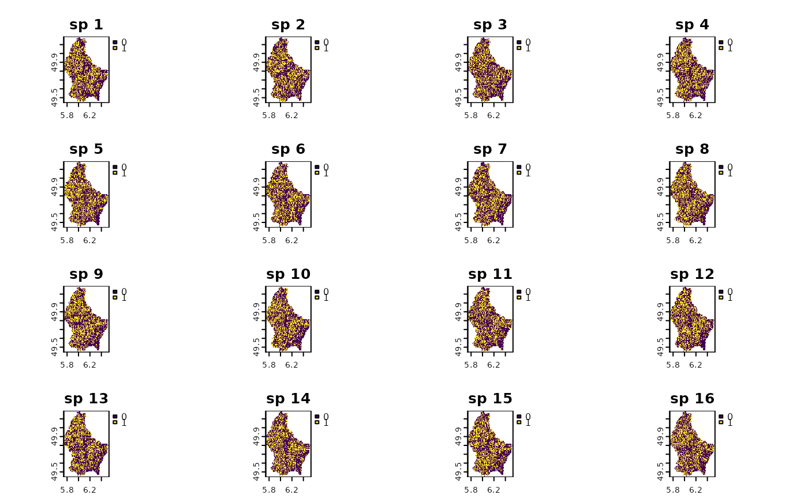
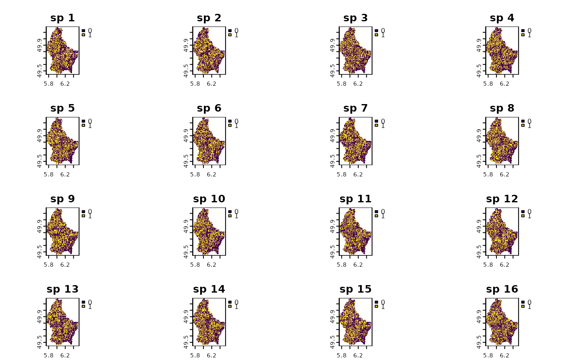

Randomize a set of rasters according to the observed frequency.
Source:R/bootspat_naive.R
bootspat_naive.RdRandomize a set of rasters according to the observed frequency using the methods: sites (by cells), species (by layer) or both (layers and cells). The randomization not assign values to cells with nodata.
Usage
bootspat_naive(
x,
random = c("site", "species", "both"),
filename = "",
memory = NULL,
cores = 1,
...
)Arguments
- x
SpatRaster. A presence-absence SpatRaster.
- random
character. Character indicating the type of randomization to be used. The available types are by "site", "specie" or "both". The first method (site) keeps species richness constant within each site (cell)pixel by randomizing the position (presence/absence) of the species within each cell of the stack.
- filename
character. Output filename
- memory
logical.
- cores
positive integer. If
cores > 1, a 'parallel' package cluster with that many cores is created and used. You can also supply a cluster object. Ignored for functions that are implemented by terra in C++ (see under fun)- ...
additional arguments to be passed passed down from a calling function.
Details
The first method (site) is performed within each site (cell) by randomizing the position (presence/absence) of the species within each cell of the stack. This method keeps species richness constant at each cell but the size of the species distribution might change. The second method (species) is performed at each layer (species) of the stack by randomizing the position of species presences in space. This method changes the species richness at each cell but the size of the species distribution is held constant (except if randomization is performed by frequency). The third method (both) combines randomization by site and species at the same time. This method will shuffle all presences across cells and layers, changing site richness and species distribution sizes and location at the same time.
Examples
library(terra)
#> terra 1.7.37
# load random species distributions
r <- load_ext_data()
plot(r)
 # randomize pres/abs data by site
rn <- bootspat_naive(r, "site")
plot(rn)

library(SESraster)
library(terra)
# creating random species distributions
f <- system.file("ex/elev.tif", package="terra")
r <- rast(f)
set.seed(510)
r10 <- rast(lapply(1:18,
function(i, r, mn, mx){
app(r, function(x, t){
sapply(x, function(x, t){
x<max(t) & x>min(t)
}, t=t)
}, t=sample(seq(mn, mx), 2))
}, r=r, mn=minmax(r)[1]+10, mx=minmax(r)[2]-10))
names(r10) <- paste("sp", 1:nlyr(r10))
plot(r10)
# randomize pres/abs data by site
rn <- bootspat_naive(r, "site")
plot(rn)

library(SESraster)
library(terra)
# creating random species distributions
f <- system.file("ex/elev.tif", package="terra")
r <- rast(f)
set.seed(510)
r10 <- rast(lapply(1:18,
function(i, r, mn, mx){
app(r, function(x, t){
sapply(x, function(x, t){
x<max(t) & x>min(t)
}, t=t)
}, t=sample(seq(mn, mx), 2))
}, r=r, mn=minmax(r)[1]+10, mx=minmax(r)[2]-10))
names(r10) <- paste("sp", 1:nlyr(r10))
plot(r10)
 # bootstrapping once
randr10 <- bootspat_naive(r10, "site")
plot(randr10)

plot(c(sum(r10), sum(randr10)), main=c("observed", "randomized"))
# bootstrapping once
randr10 <- bootspat_naive(r10, "site")
plot(randr10)

plot(c(sum(r10), sum(randr10)), main=c("observed", "randomized"))
 cbind(observed=sapply(r10, function(x)freq(x)[2,3]),
randomized=sapply(randr10, function(x)freq(x)[2,3]))
#> observed randomized
#> [1,] 767 1813
#> [2,] 3443 1809
#> [3,] 1175 1771
#> [4,] 889 1789
#> [5,] 908 1814
#> [6,] 2160 1784
#> [7,] 548 1789
#> [8,] 133 1857
#> [9,] 122 1830
#> [10,] 4174 1780
#> [11,] 2565 1753
#> [12,] 3031 1828
#> [13,] 36 1781
#> [14,] 4387 1816
#> [15,] 3270 1820
#> [16,] 2198 1793
#> [17,] 2427 1815
#> [18,] 235 1826
cbind(observed=sapply(r10, function(x)freq(x)[2,3]),
randomized=sapply(randr10, function(x)freq(x)[2,3]))
#> observed randomized
#> [1,] 767 1813
#> [2,] 3443 1809
#> [3,] 1175 1771
#> [4,] 889 1789
#> [5,] 908 1814
#> [6,] 2160 1784
#> [7,] 548 1789
#> [8,] 133 1857
#> [9,] 122 1830
#> [10,] 4174 1780
#> [11,] 2565 1753
#> [12,] 3031 1828
#> [13,] 36 1781
#> [14,] 4387 1816
#> [15,] 3270 1820
#> [16,] 2198 1793
#> [17,] 2427 1815
#> [18,] 235 1826